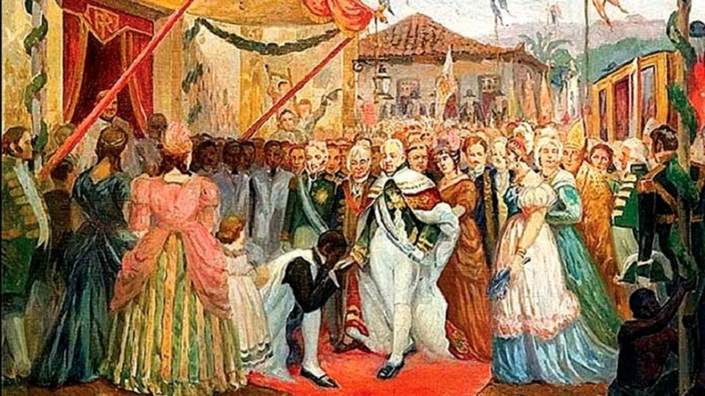
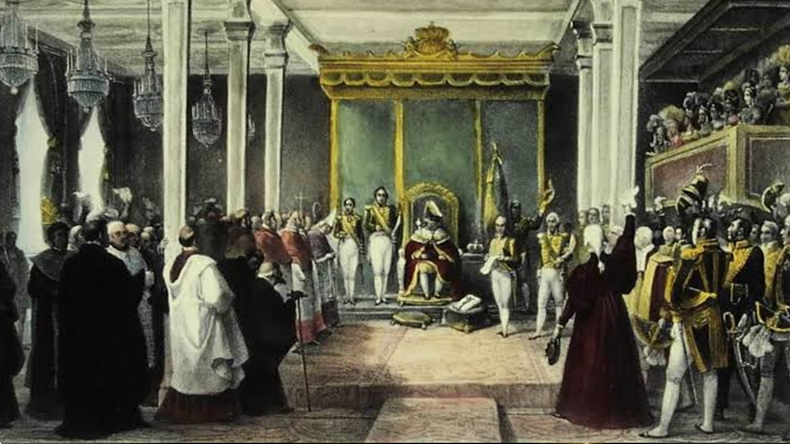
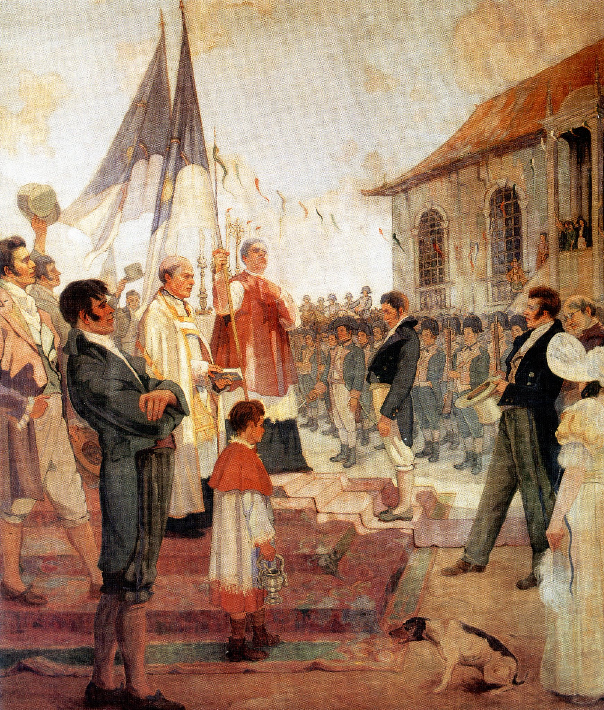
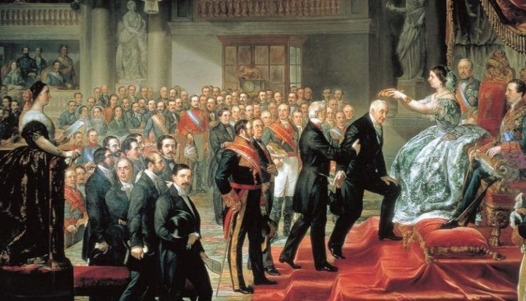
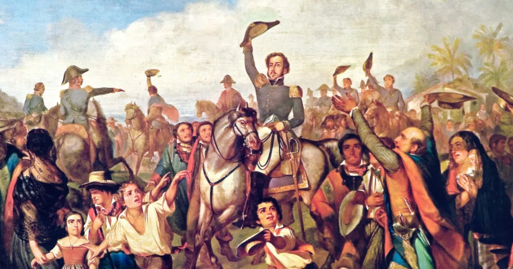
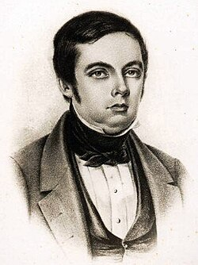
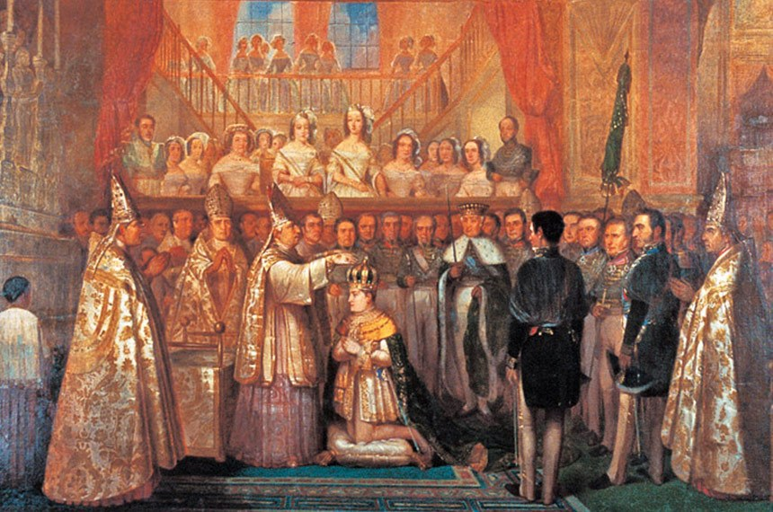
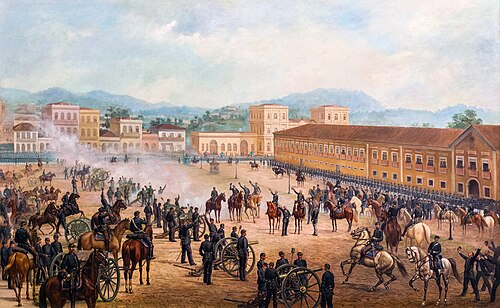
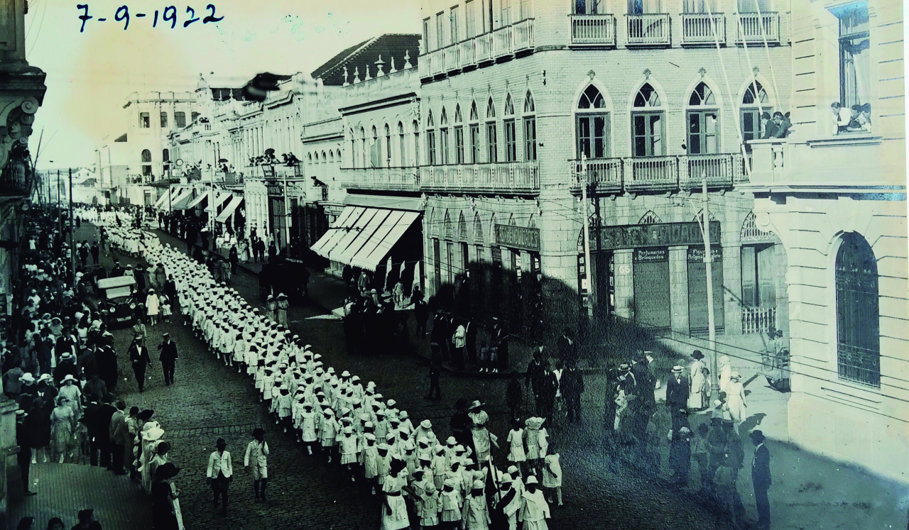

A Chegada da Família Real
1808

Elevação a Reino Unido
1815

Revolução Pernambucana
1817

Revolução Liberal do Porto
1820

A Independência
1822

A Composição da Melodia
1831

Oficialização da Melodia
1841

Refatoração Rejeitada
1889-1890
 (1).jpg)
A Versão Final
1909

O Centenário
1922